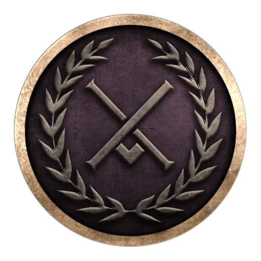
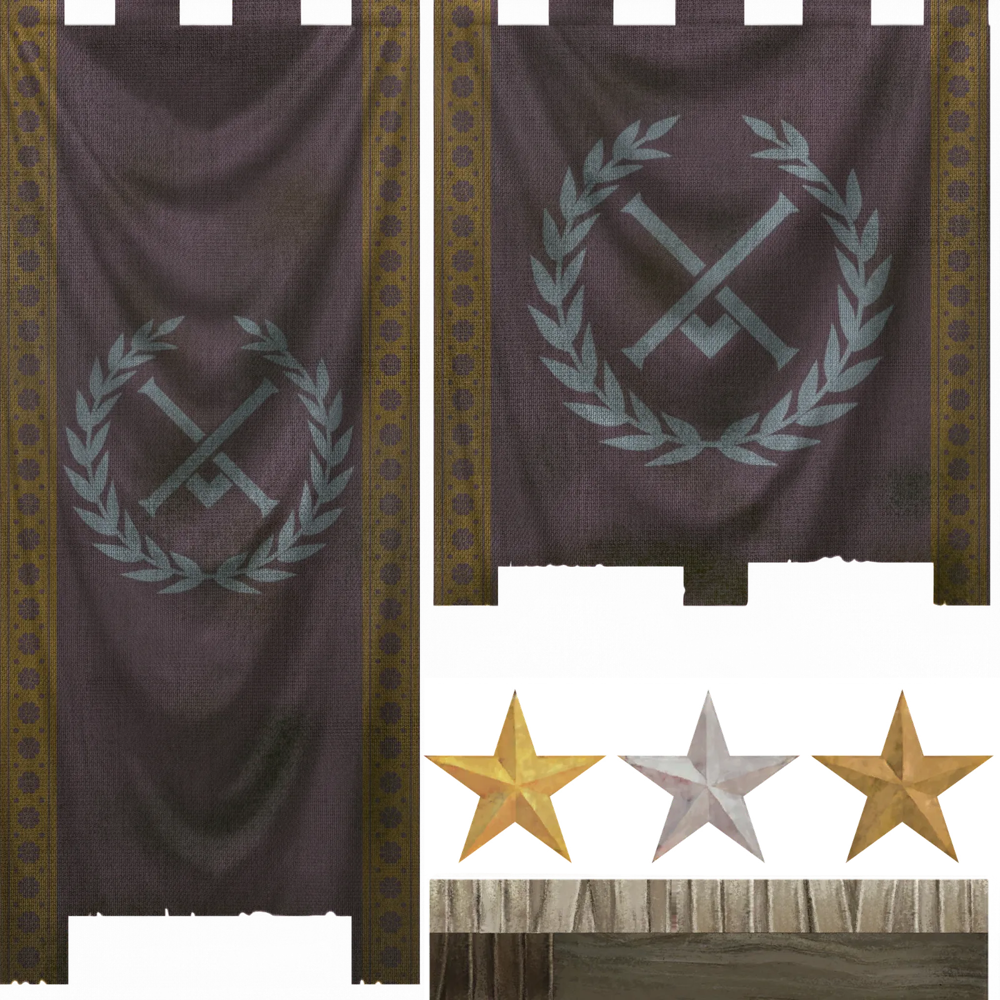
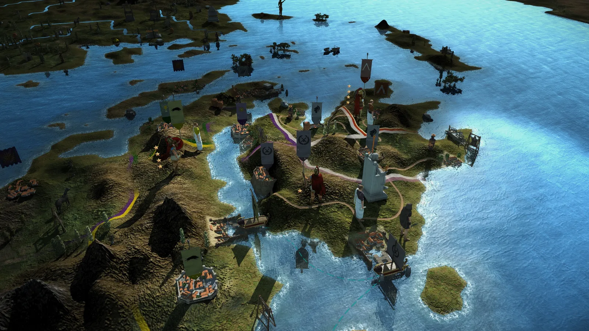
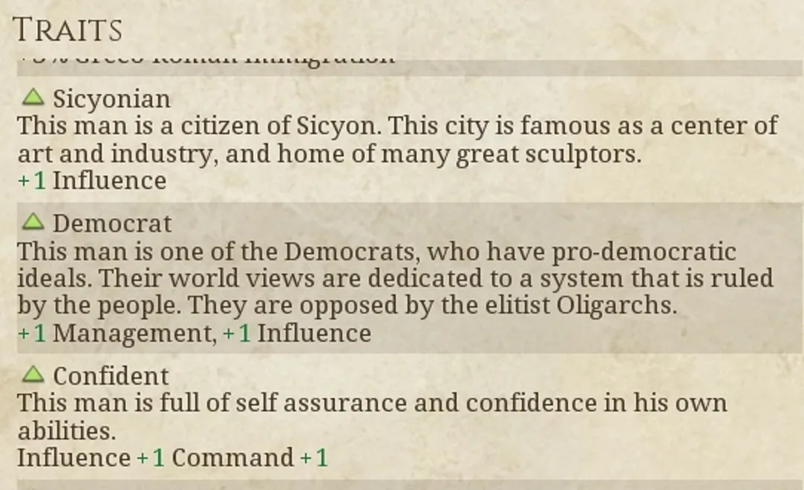

RTR: Imperium Surrectum
RTR: Imperium SurrectumThe Achaean League
2022-02-16 · Rex Basiliscus

"One could not find a political system and principle so favourable to equality and freedom of speech, in a word so sincerely democratic, as that of the Achaian League. Owing to this, while some of the Peloponnesians chose to join it of their own free will, it won many others by persuasion and argument." – Polybios of Megalopolis
Slowly, the autumn sun rose over the lush, green plain of Megalopolis, its rays warming the cold ground. Birds began chirping, squirrels rushed up and down the trunks of the ancient trees that dotted the landscape. Soon, the first human sounds emitted from the nearby farms and were to be heard behind the mighty walls of the city. While the sun, led by Apollo himself, started on its journey up into the clear, blue sky, an old man led a group of children out into the open. Running about and shouting like children do, they explored the high grass, the ferns, the flowers and the insects buzzing around them.
"Children", the old man shouted, "you are the sons of the finest men of Achaia, behave! Control your feelings!" It took him some time and effort, but he eventually convinced all children to sit down on a stone platform on a small hill just outside of Megalopolis. "Will you tell us about the Romans today, teacher?", one small boy asked curiously. "Is today the day when we will learn how to throw a javelin?", a particularly fidgety kid wanted to know. Shaking his head, the old man sighed and pointed to one of the boys in the second row. "Thearidas, would you be so kind?" The young boy nodded and announced firmly. "Today grandfather Polybios will speak about the beginnings of our state, the Achaian League."
Polybios smiled, while taking out a scroll. "Yes, Thearidas, you are right. It was a simpler time, but not necessarily a better time. Back then, no one called all the Peloponnesians Achaians, and no one in Greece knew who the Romans were. Let me take you back to the 3rd year of the 127th Olympiad. These are the words of one of the leading men of Aigion at the time...
"THEY’ve called us peasants, they’ve called us insignificant, or they simply forgot about us. Yet, did not the poet call all Hellenes Achaians? Did they not defend the honour of Achaia in the shadows of the giant walls of Troy? Did not Herodotus already know of the Dodekapolis of Aigion? Did our forefathers not found strong Metapontion, wealthy Sybaris, famous Kroton and beautiful Kaulonia in Megale Hellas?
Our ancestors were poor peasants, working the barren ground of Northern Achaia. Though they had not much, they were most fair and just, living under a democratic form of government. Well learned writers of history, big mouthed politicians and vain lyricists may have thought we did not matter much, yet when the revolution against the Pythagoreans in Megas Hellas took place, the Italiots sent for the Achaians to give them a new constitution, because they knew the political order of the Achaian cities was the best in all of Hellas. And again, subsequently, when the Lakedaimonians most unexpectedly lost the hegemony over the Hellenes to the Thebans and great uncertainty prevailed in the whole country, both sides, not quite believing what had happened, turned to the Achaians and asked them to regulate the affairs of the Peloponnese.
By Zeus Hamarios, they were not taking their power into consideration, for we Achaians were then almost the weakest state in Hellas, but they chose our forefathers in view of their trustworthiness and high character in every respect.
"For", Polybios added, "indeed this opinion of them was at that time, as is generally acknowledged, held by all." He continued to read the script: "We never had the power, neither many men nor mighty warriors, and that was why we did not fight in the war against the Medians, nor did we intend to take part in the war between the Athenians and the Peloponnesians. That was also why the Thebans subdued us when we had been loyal allies of the Lakedaimonians and why, when we resisted the Macedonian tyranny time and again, we were overcome, and why we lost our ancestral right to Naupaktos. Yet we accepted our fate with high spirit and gracious character, and throughout the Oikumene men admired us.
But the wind has changed. Eleven years ago, the cities of Tritaia, Dyme and Pharai followed Patrai in reviving the Koinon of the Achaians. They immediately demonstrated their strength by quickly persuading some Poleis to join and expelling Macedonian garrisons from other states: Aside from Bura, Karyneia, Leontion, Aigeira and Pellene, my home town Aigion was among them, too. We then joined forces with the divine Pyrrhos against Argos and Lakedaimon, and when the Gods decided to take Pyrrhos up to Olympos, we honoured him in our own way.
Now, messengers from Athens have arrived. Yes, the Athenians may be arrogant and pretentious, but they are Ionians and they revere Poseidon Helikonios, just as we do. They are our relatives and our friends, and we should listen to them. Rumour has it that they have the backing of the Greek king of Egypt, and that even their old foe from Lakonia may join an alliance. The aim: to liberate Hellas from the tyranny of the Macedonians.
I am but a citizen of Aigion, so it is in your hand, people of Achaia, to decide. Will we join these cities and kingdoms to throw off the yoke of the Northerners? Or will we keep to ourselves? Maybe the time has come when the Achaians will not be weak any longer. Perhaps the time has come to rise up and reach out for the prize, to receive the reward our just character reserves. Possibly, if Zeus Hamarios wills it so, the time of the Achaians is finally here."
Hi everyone!
Today we will be taking a look at another of our new Greek factions: the Achaian League! Situated in the northern strip of land of the Peloponnese, this one province minor faction is another of the more difficult ones to play as. But we do believe it provides an extremely enjoyable campaign!


You are leading the Achaian League, a federation of city states on the Northern Peloponnese. In the past, the Achaians have stayed neutral, but remained weak - the time to expand has come. Athens and Sparta, backed up by the Ptolemies, are preparing a war against Macedon. If you join them, Corinth should be your main target, and it would greatly increase the income of the League. However, don't trust the Spartans who are harbouring ambitions for the Peloponnese, and be wary of the greedy Aitolians to the North.


And there you have it, another faction revealed. Let us know if you Sparta fanboys will give this one a shot as well in the a channel. Historically speaking, this is the time of the Achaian League, after all ...